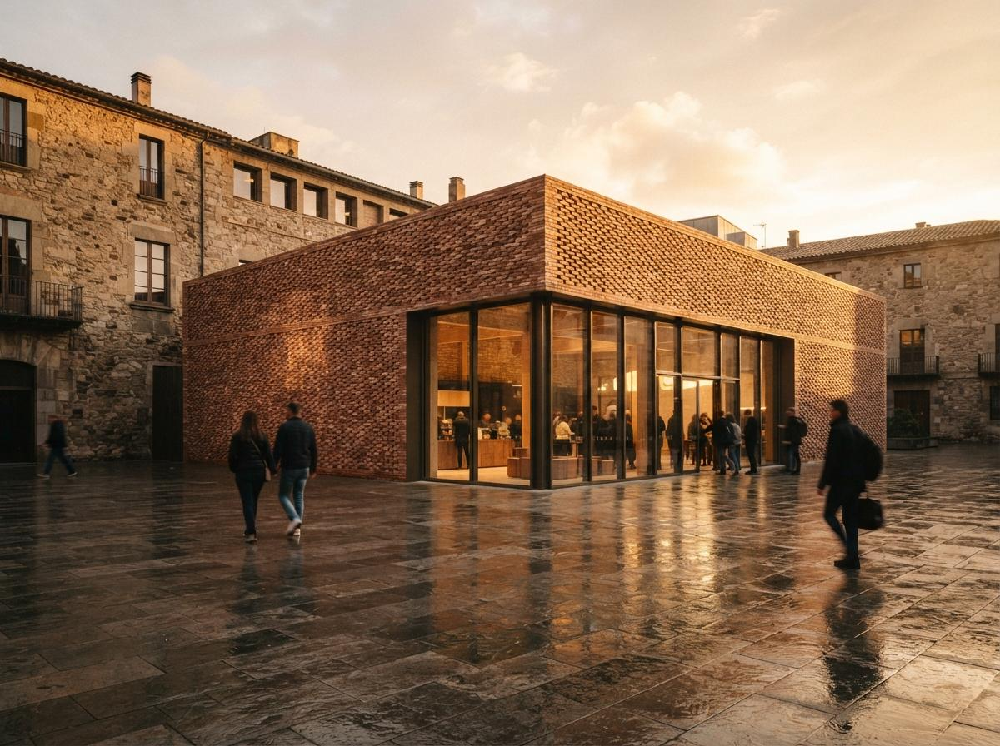

Most of the attention in AI rendering goes to the big move: a model that turns a massing study into a photoreal street view. The quieter win, the one architects mention in passing on the archviz forums, is smaller and more useful day to day. It is the ability to take one photograph of a real surface and get back a full material out of it, ready to apply to geometry. A recent thread on r/archviz put it plainly: the most practical AI in the pipeline was not the headline render generator, it was the bit that turned a low-quality material sample into usable maps. That is the workflow worth knowing, because it removes a real bottleneck without asking you to rebuild how you work.
What a material actually is
If your rendering lives entirely inside SketchUp or a quick real-time view, you may have only ever touched a single image stretched over a face. A production material is more than that, and the difference is why AI generation matters. A physically based, or PBR, material is a small stack of images that each tell the engine something different about the surface.
- Base color, or albedo. The flat color of the surface with no lighting in it at all. This is the one most people think of as the texture.
- Normal. Encodes the small bumps and grooves so light catches the mortar joint or the grain of timber without you modelling any of it.
- Roughness. Tells the engine where the surface is matte and where it is polished, which is most of what separates a believable material from a flat sticker.
- Height and ambient occlusion. Add real depth at the edges and soft shadow in the recesses, used heavily on brick, stone and anything with deep relief.
Authoring that stack by hand, in something like the older Substance tools, was a craft skill. It is the reason most architects rendered with whatever shipped in their engine's library and quietly avoided anything bespoke. The thing AI changed is not the format. It is who can produce one.
The tools that do it now
The category splits into two routes, and most architects only need the first.
The image-to-material tool the rest are measured against. Drop in one photo and its AI delighting and material filters infer the full map stack, with a delight pass that pulls the photographed lighting out of the base color. Strong control once you are past the first result, and it exports cleanly to every major engine. The cost is the Adobe relationship, which not every small office wants another seat of.
The material generators now built into real-time engines are the shortest path when you are already inside that engine. You stay in one window, the material lands on the object, and there is no export step. We covered Enscape's version when it arrived in our look at the Chaos AI enhancer and material generator; D5 has its own. Less control than a dedicated authoring tool, but for a wall a client pointed at this afternoon, control is not what you need.
A generation pipeline earns its keep when the material does not exist to photograph: a fictional terrazzo, a stone the budget cannot reach, a finish you are still arguing about. Generate a tileable base color, then derive the map stack from it. Powerful and free, but it is a workflow to learn, not a button. If you are weighing whether that learning curve is worth it, our piece on choosing an enhancer versus a full pipeline applies here too.
Where it breaks, every time
The generation step is the easy part now. The failures are predictable, they are the same three, and none of them show up until the material is in the scene with your own lighting on it.
| Failure | What you see | The fix |
|---|---|---|
| Wrong scale | Brick reads as tile, or a timber grain looks like veneer | Set real-world size from a known dimension in the photo |
| Visible repeat | The same square stamped across the wall, a clear grid | Break up standout marks, randomise rotation, check tiling before you commit |
| Baked lighting | A shadow or hotspot that does not move when your sun does | Lean on the delight pass, or reshoot in flat, even light |
| Over-strong normal | Plastic, inflated relief that catches too much light | Dial the normal intensity down until it reads as a surface, not a relief carving |
Scale is the one that fools people. The model has no idea your photo of a brick wall is roughly a metre across. It hands back a square, and unless you tell the engine the real size, that square lands at whatever default the scene uses, so the brick comes out the size of subway tile and the whole render quietly reads as wrong without anyone able to say why. Measure one thing in the source photo, set the material to match, and most of the believability problem is solved.
The generation takes four minutes. The believability lives entirely in the five-minute check that follows it.
How to actually run it
The workflow is short, and the discipline is all in the order.
Shoot it flat
If you can choose the photo, take it in even, overcast light or open shade, straight on, filling the frame with the surface. A hard shadow in the source is the single biggest cause of a material that fights your render later, because the delight pass has to invent what was hidden. When you are matching a real wall, five minutes of decent photography saves an hour of cleanup.
Generate, then set scale before anything else
Run the photo through your chosen tool, then immediately set the real-world size. Do this before you judge the result, because a material at the wrong scale looks broken for reasons that have nothing to do with the maps. Get the size right and you are judging the actual quality.
Check the tiling on a big flat plane
Apply it to a large surface in the scene, not a small swatch, and look for the repeat. Anything that catches the eye twice, a dark brick, a knot in the timber, a stain, will become a pattern across the wall. Soften or remove the standout, vary rotation where the engine allows, and only then call it done.
Save it once, reuse it forever
The quiet payoff is the library. Every material you generate and correct is one you keep. A practice that does this for a season ends up with a set of bespoke, project-specific materials that no stock library could sell them, built from the actual surfaces of actual buildings they have worked on.

Our take: this is the AI feature that pays for itself quietly
Nobody is going to write a breathless launch post about material map generation. It does not produce a hero image, it does not turn a sketch into a city. What it does is delete a specific, recurring half day of work and remove the reason architects substituted a near-enough material instead of the right one. That is a better trade than most of the splashier features, because it improves the unglamorous middle of the render, the surfaces, where believability actually lives. It also sits comfortably alongside the rest of the pipeline rather than replacing any of it, which is why we have argued the durable wins are the ones that respect the work you already do rather than rerouting around it.
Match the wall the client pointed at. Keep the map. The next project starts with a library no competitor has, built one photograph at a time.
Based on this week's intel sweep of 2026 AI rendering coverage for architects, including community discussion of AI inside render-engine toolsets for material work, current image-to-material tools, and Vista Studios hands-on use of photo-to-PBR workflows across live project renders. Tool behaviour and model versions change; test a generator's current output before relying on it for client work. No affiliate relationship with any tool named.